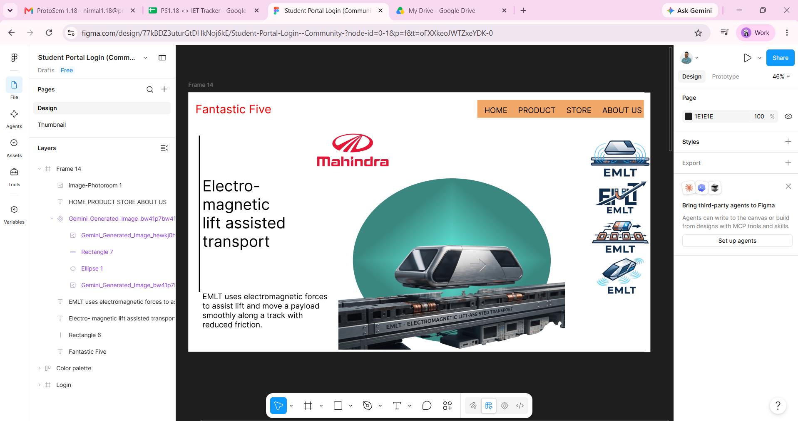
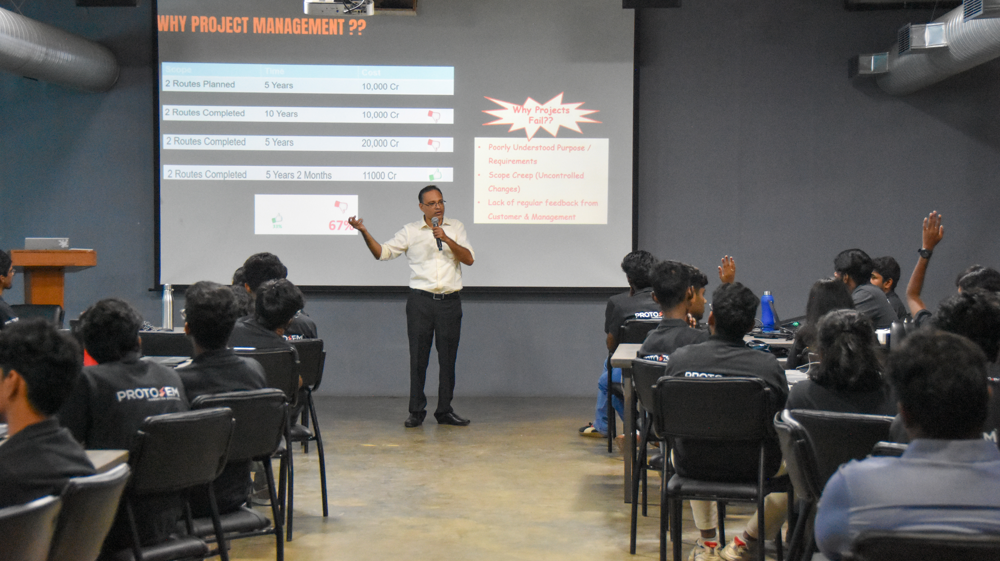

ProtoSem Journal - Week 05
UI/UX Design and Problem Statement Development
This week focused on understanding the relationship between user experience, problem identification, and thoughtful design. We explored how good interfaces are built around user needs, and how a clear problem statement creates direction for effective innovation and solution design.
What I learned
- Understood the basic principles of UI/UX design and why user-centered thinking matters.
- Learned how to define a problem statement clearly and purposefully.
- Explored how design decisions should respond to real user needs, context, and usability.
- Gained awareness of the importance of clarity, empathy, and structured thinking in design.
- Connected idea generation with practical problem-solving through better design framing.
Big takeaway
Good design does not begin with visuals alone; it begins with understanding the user and framing the right problem. When the need is clear, the solution becomes more meaningful and effective.
Week 5 in pictures


Learning reflection
UI/UX design
During the UI/UX part of the week, I learned that good interface design is not only about appearance but also about usability, accessibility, and the user journey. A strong design should make the experience intuitive, clear, and responsive to the user’s actual needs. This helped me understand how thoughtful design can improve interaction and generate a more satisfying experience.
Problem statement development
We also focused on how to develop a problem statement in a structured way. I learned that a strong problem statement identifies the user, the challenge, the context, and the purpose behind the solution. Framing the issue correctly is essential because it guides research, design decisions, and the overall direction of the project.
Final reflection: Week 5 helped me see that design and problem-solving are deeply connected. UI/UX thinking helps shape how a solution is experienced, while a clear problem statement ensures that the solution is relevant, focused, and meaningful. This week strengthened my understanding of user-centered innovation.